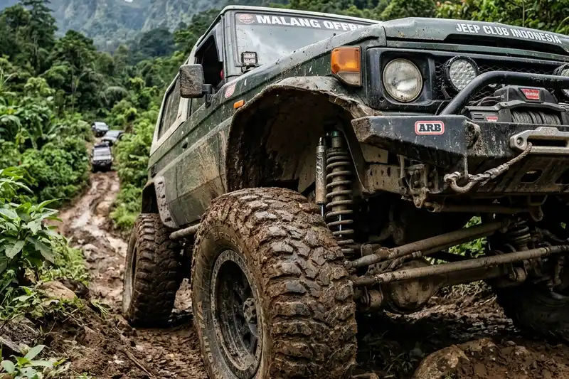

Daftar Isi
Mobil offroad terbaik untuk jalur pegunungan adalah kendaraan dengan sistem penggerak 4x4, ground clearance tinggi, suspensi kuat, dan ban all-terrain yang mampu menghadapi tanjakan, turunan, serta permukaan tidak rata secara aman.
- Sistem penggerak 4x4 dengan low range menjadi syarat utama untuk medan pegunungan yang curam dan licin.
- Ground clearance minimal sekitar 200 mm umumnya disarankan agar bagian bawah mobil tidak mudah tersangkut batu atau akar.
- Suspensi dengan travel panjang membantu menjaga traksi saat melewati permukaan bergelombang.
- Ban all-terrain atau mud-terrain lebih sesuai dibanding ban jalan raya biasa.
- Bobot kendaraan dan rasio power-to-weight memengaruhi kemampuan menanjak di jalur curam.
Apa Ciri Mobil Offroad yang Cocok untuk Jalur Pegunungan?
Mobil yang cocok untuk jalur pegunungan umumnya memiliki penggerak 4x4, ground clearance tinggi, dan sasis yang kuat menahan beban torsi di medan tidak rata.
Jalur pegunungan berbeda dari jalan aspal biasa karena permukaannya sering berupa tanah gembur, bebatuan lepas, akar pohon, dan tanjakan dengan sudut curam. Kondisi ini menuntut kendaraan dengan karakteristik teknis tertentu agar tetap stabil dan tidak mudah kehilangan traksi.
Selain penggerak 4x4, faktor lain yang menentukan kecocokan sebuah mobil untuk medan pegunungan adalah sudut approach dan departure angle yang besar, sehingga bagian depan dan belakang mobil tidak mudah menyentuh tanah saat melewati tanjakan atau turunan tajam. Breakover angle yang memadai juga penting agar bagian tengah mobil aman ketika melintasi punggung bukit atau gundukan tanah.
Sasis tipe ladder frame umumnya lebih tahan terhadap tekanan puntir (torsional stress) dibanding sasis monokok, sehingga banyak kendaraan offroad murni tetap menggunakan konstruksi ini. Namun, beberapa SUV modern dengan sasis monokok yang diperkuat juga terbukti mampu menghadapi jalur pegunungan ringan hingga menengah.

Ban dan suspensi merupakan dua komponen krusial yang menentukan kemampuan mobil di jalur pegunungan.

Liburan Seru Bareng Circle Kamu!
Booking paket offroad jeep lengkap kami. Nikmati momen tak terlupakan menjelajahi alam Malang.
Chat Admin SekarangFitur Apa Saja yang Wajib Ada pada Mobil Offroad Pegunungan?
Fitur wajib pada mobil offroad pegunungan meliputi sistem 4x4 dengan low range, differential lock, traksi kontrol offroad, dan ban all-terrain yang sesuai kontur jalur.
Berikut rincian fitur teknis yang umumnya dibutuhkan:
- Sistem 4x4 dengan low range gearbox untuk menambah torsi saat menanjak di kecepatan rendah.
- Differential lock (khususnya rear locking differential) yang membantu roda tetap berputar meski salah satu roda kehilangan traksi.
- Hill descent control untuk menjaga kecepatan tetap stabil saat menuruni jalur curam tanpa harus menginjak rem terus-menerus.
- Suspensi dengan travel panjang, baik tipe independent maupun solid axle, tergantung karakter medan yang dihadapi.
- Ban all-terrain (A/T) untuk kombinasi jalan aspal dan tanah, atau mud-terrain (M/T) untuk medan berlumpur ekstrem.
- Skid plate atau pelindung bagian bawah mesin dan transmisi dari benturan batu.
- Snorkel opsional untuk kondisi jalur dengan genangan air atau debu tebal di ketinggian tertentu.
Data industri otomotif menunjukkan bahwa kendaraan dengan sistem 4x4 part-time memiliki konsumsi bahan bakar yang berbeda dibanding sistem full-time, sehingga pemilihan jenis penggerak turut memengaruhi biaya operasional jangka panjang, menurut data spesifikasi teknis produsen kendaraan tahun 2024.
Berapa Ground Clearance Ideal untuk Jalur Pegunungan?
Ground clearance ideal untuk jalur pegunungan umumnya berada di kisaran 200 hingga 250 mm agar bagian bawah mobil tidak mudah tersangkut bebatuan atau permukaan tidak rata.
Semakin tinggi ground clearance, semakin besar pula kemampuan kendaraan melewati rintangan seperti batu besar, akar pohon, atau parit kecil tanpa merusak komponen bawah mobil seperti gardan, knalpot, atau tangki bahan bakar. Namun, ground clearance yang terlalu tinggi tanpa diimbangi lebar wheelbase yang memadai dapat meningkatkan risiko oleng (rollover) di tikungan tajam pegunungan.
Selain ground clearance statis, faktor yang perlu diperhatikan adalah approach angle, departure angle, dan breakover angle. Ketiganya menentukan seberapa curam tanjakan atau turunan yang bisa dilalui tanpa bagian mobil menyentuh tanah.
Bagaimana Cara Memilih Mobil Offroad Sesuai Kebutuhan dan Medan?
Cara memilih mobil offroad yang tepat adalah dengan menyesuaikan tipe kendaraan terhadap tingkat kesulitan medan, frekuensi penggunaan, dan anggaran perawatan jangka panjang.
Pertimbangan utama yang perlu dilakukan calon pembeli:
- Menentukan tingkat kesulitan jalur yang akan sering dilalui, apakah jalur pegunungan ringan berupa tanah padat, atau jalur ekstrem berbatu dan berlumpur.
- Memilih antara SUV offroad atau pickup 4x4 berdasarkan kebutuhan mengangkut penumpang atau barang.
- Memperhatikan ketersediaan suku cadang dan bengkel spesialis 4x4 di daerah domisili, karena hal ini memengaruhi biaya dan waktu perawatan.
- Mempertimbangkan biaya modifikasi tambahan seperti ban, suspensi, dan winch jika kendaraan bawaan pabrik belum memenuhi kebutuhan medan tertentu.
- Menyesuaikan anggaran dengan mempertimbangkan biaya bahan bakar yang umumnya lebih tinggi pada kendaraan 4x4 dibanding mobil penggerak roda dua.
Kesalahan umum yang sering terjadi adalah memilih mobil hanya berdasarkan tampilan gagah tanpa mengecek spesifikasi teknis seperti approach angle, ground clearance aktual saat bermuatan, dan ketersediaan differential lock. Konsultasi dengan komunitas offroad lokal atau bengkel spesialis dapat membantu menghindari kesalahan ini sebelum membeli.
Apa Perbedaan Sistem 4WD dan AWD untuk Medan Pegunungan?
Sistem 4WD umumnya lebih andal untuk medan pegunungan ekstrem karena memiliki low range dan mekanisme penggerak yang lebih kokoh, sedangkan AWD lebih cocok untuk medan pegunungan ringan hingga sedang.
4WD (four-wheel drive) biasanya dilengkapi transfer case dengan pilihan high range dan low range, memberikan torsi lebih besar pada kecepatan rendah yang dibutuhkan saat menanjak curam. AWD (all-wheel drive) umumnya bekerja secara otomatis mendistribusikan tenaga ke keempat roda tanpa intervensi manual, sehingga lebih nyaman untuk penggunaan harian namun kurang optimal pada medan ekstrem berbatu atau berlumpur dalam.
Pemilihan antara keduanya sebaiknya disesuaikan dengan karakter jalur pegunungan yang akan sering dilalui. Jalur wisata pegunungan dengan jalan berbatu ringan umumnya masih dapat dilalui SUV bersistem AWD, sementara jalur offroad ekstrem menuntut sistem 4WD dengan differential lock.
Kesalahan Umum Saat Memilih Mobil Offroad untuk Pegunungan
Kesalahan umum yang sering terjadi antara lain mengabaikan bobot muatan, tidak memeriksa kondisi ban, dan memaksakan kendaraan penggerak roda dua ke medan yang membutuhkan 4x4.
- Mengabaikan pengaruh muatan penumpang dan barang terhadap ground clearance aktual di lapangan.
- Menggunakan ban jalan raya standar pada jalur berbatu atau berlumpur yang membutuhkan ban all-terrain.
- Tidak melakukan pengecekan kondisi rem dan suspensi sebelum perjalanan jauh ke pegunungan.
- Memaksakan kendaraan tanpa fitur low range untuk menanjak di jalur curam, yang berisiko membuat mesin overheat.
- Kurang memperhitungkan ketersediaan bahan bakar dan bengkel di sepanjang rute pegunungan yang dituju.
Tips Merawat Mobil Offroad Agar Tetap Optimal di Pegunungan
Perawatan mobil offroad untuk pegunungan sebaiknya mencakup pengecekan rutin suspensi, sistem pendingin mesin, dan kondisi ban sebelum dan sesudah digunakan di medan berat.
Beberapa tips perawatan yang umum direkomendasikan:
- Memeriksa tekanan udara ban dan menyesuaikannya dengan kondisi medan, karena tekanan yang terlalu tinggi dapat mengurangi traksi di tanah gembur.
- Membersihkan bagian bawah mobil dari lumpur dan kotoran setelah melewati jalur ekstrem untuk mencegah korosi.
- Melakukan servis berkala pada sistem pendingin mesin, mengingat medan menanjak membebani mesin lebih berat dibanding jalan datar.
- Mengecek kondisi komponen suspensi dan kaki-kaki secara rutin karena bagian ini menerima tekanan besar saat melintasi medan tidak rata.
- Menyediakan peralatan darurat seperti dongkrak tinggi, tali derek, dan kompresor ban portabel saat bepergian ke jalur pegunungan terpencil.